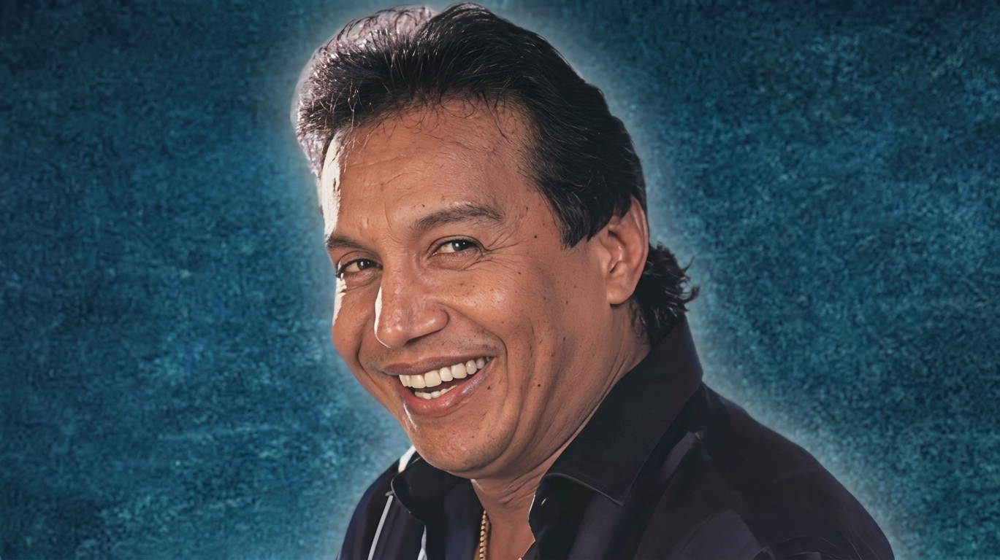

Diomedes Diaz El Cacique

Es una telenovela colombiana transmitida por RCN Televisión, una obra ficticia basada en algunos
momentos de la vida del cantante de vallenato Diomedes Díaz. Su género es biografía y drama, con episodios
de unos 60 minutos. La plataforma RCN Total la presenta como una serie que desborda música, pasión y escándalo